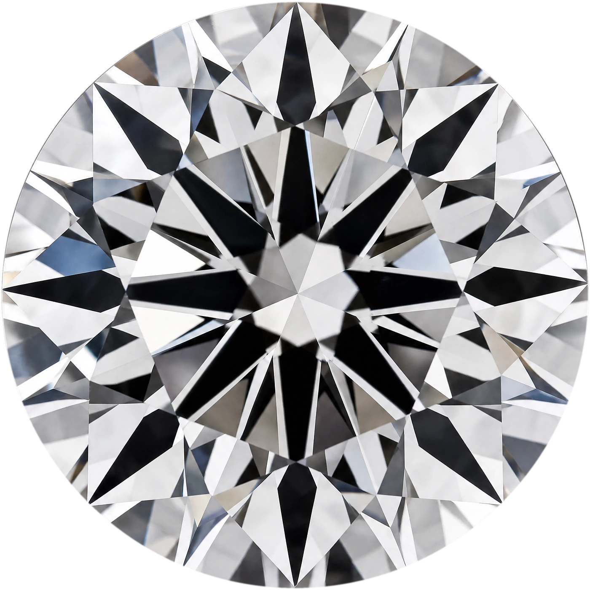

Schritt 2 · Die Pinzette
Nähe schafft
Klarheit.
Jeder Diamant erzählt
eine eigene Geschichte.
Schritt 3 · Die Lupe
So sehen
wir hin.
Mit 10-facher
Vergrößerung.
Schritt 3 · Reinheit
Reinheit
VS1.
Reinheit wird bei 10-facher Vergrößerung bewertet. Einschlüsse sind Spuren der Entstehung tief in der Erde, kein Fehler. Ab SI sieht man sie teils mit bloßem Auge.
Schritt 4 · Farbe
Farbe
im Vergleich.
Von D bis K. Wir legen Ihren Stein neben geprüfte Vergleichssteine. Tippen Sie auf einen Buchstaben.

Schritt 5 · Karat
Wie groß
wirkt er?
Am Finger. In Ihrer Realität. Der Diamant liegt dort, wo der Ring sitzt, und wächst mit dem Regler maßstäblich zum Finger (Ringfinger etwa 17 mm breit).
In Originalgröße am BildschirmDoppeltes Gewicht ist nicht doppelte Größe: 2 Karat sind nur gut ein Viertel breiter als 1 Karat.
Schritt 6 · Die 4C
Ihr Diamant.
Ihre Wahl.
Transparenz auf einen Blick. Stellen Sie Schliff, Farbe, Reinheit und Karat ein. Wir legen Ihnen passende Steine am Tresen vor.
Schritt 7 · Fassung
Im perfekten
Rahmen.
Ausgewählt. Fürs Leben. Krappen lassen viel Licht an den Stein, eine Zarge schützt ihn rundum. Den gewählten Diamanten setzen wir in die Fassung Ihrer Wahl.
Ring gestaltenSchritt 8 · Beratung
Persönlich
beraten.
Am Tresen. Schritt für Schritt. So läuft Ihr Termin:
- Auspacken Wir öffnen die Briefchen mit Steinen, die zu Ihren Wünschen passen.
- Lupe Sie sehen jeden Stein selbst bei 10-facher Vergrößerung.
- Farbe Vergleich neben Steinen von D bis K, bei Tageslicht.
- Am Finger Größe und Wirkung an Ihrer Hand, ohne Kaufpflicht.
- Gutachten Zu jedem größeren Diamanten gibt es das Gutachten eines unabhängigen Labors.
Was steht im Gutachten?
Gewicht in Karat, Maße in Millimetern, Farbe, Reinheit, Schliff, Politur, Symmetrie und Fluoreszenz. Oft ist eine Nummer fein in die Rundiste graviert, die zum Gutachten passt.
Natürlich oder im Labor gewachsen?
Beide sind echte Diamanten aus Kohlenstoff mit gleicher Härte. Wir sagen Ihnen bei jedem Stein klar, woher er kommt.
Was ist das wichtigste der 4C?
Der Schliff. Er entscheidet, wie viel Licht der Stein zurückwirft. Ein sehr guter Schliff lässt einen Stein lebendiger wirken als mehr Karat.
Ganz nah
Überall
ganz nah.
Ziehen Sie die Lupe über den Stein. Am Tresen zeigen wir Ihnen dasselbe mit der echten Lupe, auch am Handy per Video.
Zurück zur Galerie